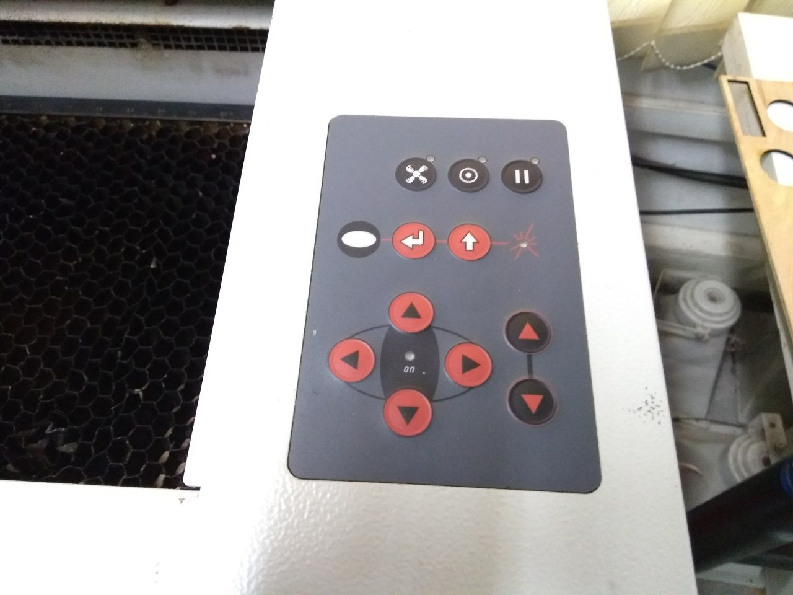

Laser Cutter
The laser cutter is one of the most useful tools in Fablab. Laser cutters work by projecting a very powerful laser beam at a precise focal length onto the material which we want to either cut or etch. Laser cutter machines also similar to other CNC tools, only do they use a Laser beam instead of the blade or bit. This Tutorial is meant to be a resource to anyone who is looking to do some laser cutting for the first time using trotec laser cutters, learn a bit more about how laser cutters work, or just explore the wonderful world of laser cutters.
Trotec Speedy 100
The first thing you need to use a laser cutter, is the laser cutter itself. But though, purchasing one may not be within your budget. That's why you need to take advantage of Fablabs. The Speedy laser engraving and cutting systems are the perfect choice both for entry level users as well as professional engravers. The fastest and most productive laser machines in the market. By processing at maximum speed of 3.55 m/sec and acceleration of 5g the Speedy is designed to increase your production efficiency. In fablab, we have Trotec Speedy 100 , you can find the documentations of the machine from this link. Trotec have the bedsize of 60 x 30 cm(610mm x 305mm) are available with a CO₂.

Supported Materials
Most materials other than metals can cut or engrave using Trotec Speedy 100. Metals were not able to cut or even engrave with in this model. The below list contain the common materials that you can use to cut in Trotec Speedy 100.- Acrylic
- Wood
- Plastic
- Fiber
- Leather
- Papper

Health and safety precautions

Laser Cutting is not easy as vinyl cutters. You need to take care of some harmful issues while laser cutting. More on that lasers is too dangerous. The laser beam itself is too harmful to human and other living being’s body. even it should effect our eyes while watching the laser cutting directly with naked eyes.The laser will produce toxic fumes and smokes during the cutting or engraving process. It will spread to the surroundings quickly. Chemical vapors, and smoke can be emitted during laser cutting with various materials. But most of the laser cutter comes with it's own filter.The filter will take out all the gases and smokes during laser cutting and then filter them. So, the filter can be handy and most health hazards can be reduced.
Safety gear
- Use a face mask while doing laser cutting(N95 is preferred)
- Use laser protection goggles( at least wear a safety glass )
Using Trotec Laser Cutter Machine
Here is the step by step instruction for how use laser cutting machines.
Turn ON Filter and Laser Machine
The first step is to turn ON the filtering machines. You can find the power button in the control panel of the filter machine. Make sure that the filter machine is working properly after you turned ON, by checking the green LED (labeled run) is turned ON. Also check the exhaust pipe from the filter machine were kept outside through the window. Then turn on the Laser machine. You can find the power switch behind the Laser machine.

Place the Material In the Bed
Now, Open the lid of the laser machine and place the material that you are going to use.
Setting X,Y and Z axis of the Laser machine
The X axis is the toolhead(Laser point). So first we need to focus the laser point to the material and then set the appropriate X and Y axis. You can do this via the control panel that you can find on the right side of the laser machine. Use the focusing .

By using the Focusing tool that comes with the Trotec laser cutter machine. We can perfectly focus the laser in to the material. place the tool on the laser tool head, then bring the BED on to top using the Z axis control buttons in the control panel. Bring the BED until the tool falls from the laser tool head.

After this, use the X and Y axis control button to move the head position into the proper X,Y location.

Sending Design File To The Laser Cutter
Export your 2D design file in to any of the Vector format. DXF, DWG,SVG,PDF are supported. Open any of the vector designing software like CorelDraw,Adobe Illustrator, Inkscape and open the file that you need to cut. Make sure that your design compatible with laser cutter. Import the file into the software. Then click print. Select the Trotec laser cutter as the machine.


Then you will take into the trotec job control software. Select the job from the queue, you can find the queue list in the right side. Then select the material and thickness of the material. Change the parameters of the cutting and engraving settings if needed. Then click ready button, and then click cut button. The machine will start it job, wait until the job were finished by the machine. Press the pause button on the control panel of the machine or in the job control software if anything went wrong.
Done!
After finish the cut, open the lid and take out the material and cut out pieces. Then close the lid back. Here are some designs that cutout using Trotec speedy100 laser cutter.